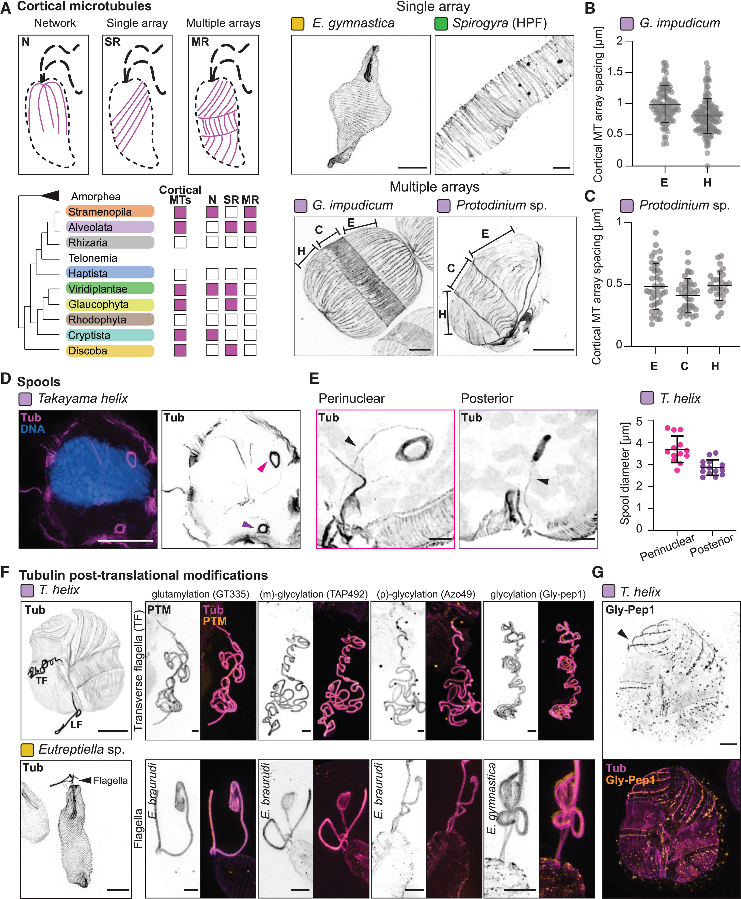

tubulin spool
A compact spool-like tubulin-positive cytoskeletal structure observed in kareniacean dinoflagellates. In Takayama helix, ultrastructure expansion microscopy resolves perinuclear and posterior spools that appear continuous with microtubules. The name denotes the assembled structure, not a tubulin protein or the entire cortical microtubule array. [DOI:10.1016/j.cell.2025.09.027]

NCBITaxon:241424) · Felix Mikus and coauthors, Charting the landscape of cytoskeletal diversity in microbial eukaryotes, Cell (2025), Figure 2, DOI 10.1016/j.cell.2025.09.027. Copyright 2025 The Authors; published by Elsevier Inc.; CC BY 4.0. Unmodified publisher image. · CC_BY_4_0 · source: OTHER S0092867425011274 Figure 2 · DOI:10.1016/j.cell.2025.09.027Synonyms: microtubule spool
Part of: GO:0015630
Components
| Component | Type | Part of / acts on | Grounding | Genes | Stoichiometry | Essential | Role |
|---|---|---|---|---|---|---|---|
| Tubulin | PROTEIN | part of | InterPro:IPR000217 | UNKNOWN | Tubulin-family material detected in the spool by post-expansion immunolabeling. The family grounding does not identify every tubulin subtype or an exact Takayama gene product, and the study did not test assembly essentiality.
|
Canonical examples
NCBITaxon:241424Takayama helix — Cultured RCC10719 dinoflagellate examined by fixed-cell ultrastructure expansion microscopy. Figure 2D-E shows perinuclear and posterior spools. Table S1, List of Species row 46, identifies the strain; Dataset Annotation row 1384 records spool-positive interphase material, E7 antibody and one species in the gel. P22-120 is its other culture code. [DOI:10.1016/j.cell.2025.09.027]
Discussions
- CURATION_TODO (RESOLVED): Distinguish the named spool assembly from tubulin proteins and broader cytoskeletal structures. A shape-bearing subcellular structure requires its own identity without promoting a broader ontology class or a hypothetical homology to equivalence.
- CURATION_TODO (OPEN): Resolve the spool's filament topology, tubulin subtype composition and assembly mechanism. Immunolocalization and an apparent connection cannot establish the complete lattice, gene inventory or assembly dependencies.
- CURATION_TODO (RESOLVED): Keep neighboring cortical centrin, DNA and flagellar modification signals separate from spool composition. A multi-channel or multi-panel view does not make every labeled material a constituent of the highlighted structure.
- CURATION_TODO (OPEN): Establish physiological function, cell-cycle dynamics and taxonomic prevalence with targeted tests. A fixed-cell survey and a hypothesis about neighboring structures do not demonstrate force transmission, swimming performance or division requirements.
- CURATION_TODO (OPEN): Reconcile expansion-factor handling before asserting native-cell dimensions from the figure. Conflicting scale statements must not be silently converted into a precise biological measurement.
- CURATION_TODO (RESOLVED): Interpret combined culture identifiers using specimen annotations rather than filenames alone. Co-embedded cultures are not synonyms or proof that both organisms possess the structure.
Datasets
- Microbial eukaryote U-ExM volumes and annotations · OTHER · STRUCTURAL_IMAGING · Platform: Ultrastructure expansion microscopy with post-expansion immunofluorescence
Inspected the pinned repository metadata, data/project.json and data/volumes/dataset.json, plus the tab-delimited categories.csv. The default dataset is volumes, not the older single_volumes metadata. Spool annotations include Yes, No, Maybe and blank entries; they are not treated as clade-level presence or absence. The archive also links BioImage Archive S-BIAD2095; no raw volume is hosted or claimed to have been reanalyzed here.
Evidence
DOI:10.1016/j.cell.2025.09.027Mikus et al. (2025), Charting the landscape of cytoskeletal diversity in microbial eukaryotes, Cell. Read the primary microtubule-array Results, dinoflagellate survey, Discussion, Figure 2 and 6 legends, key resources, fixation, U-ExM, microscopy and image-analysis Methods in the public article PDF. Spool identity and location are observations; desmose association and physiological roles remain proposals.https://www.dudinlab.com/s/Table-S1.xlsxAuthor-linked Table S1 read directly. List of Species A46:K46 identifies RCC10719 as Takayama helix with successful expansion and staining. Dataset Annotation D1384:V1384 identifies the spool-positive interphase volume rcc10719_pfa_dna-tub-nhs_20230802_od_s00, culture code P22-120, E7Ab and one species in the gel. These are image annotations, not independent-cell counts or a population-prevalence estimate.GO:0005622Verified non-obsolete intracellular anatomical structure, used as a broad is-a parent without asserting a particular microtubule lattice or membrane boundary.GO:0015630Verified non-obsolete microtubule cytoskeleton. The spool is a part of this cytoskeletal system, not equivalent to the whole system.
Curation history
2026-10-03T19:30:36Zcodex · CREATED_RECORD — Scaffolded by scripts/new_record.py2026-10-03T19:32:55Zcodex · EXPANDED_RECORD — Added tubulin-family composition, verified Takayama strain and dataset provenance, ontology boundaries, unresolved functional and scale scope, and inspected CC BY publisher Figure 2.